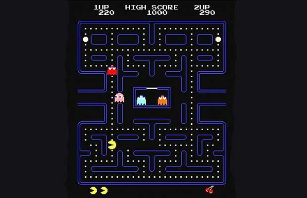
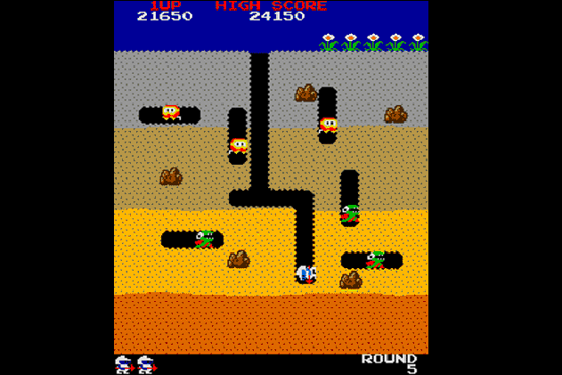

Table Example 1
Nintendo's milestones
| 1889 |
| Nintendo is founded by Fusajiro Yamauchi. |
| 1902 |
| Mr. Yamauchi starts manufacturing the first western-style playing cards in Japan. |
| 1963 |
| The company changes its name to Nintedo Co., Ltd. and starts manufacturing games in addition to playing cards. |
| 1970 |
| Nintendo introduces electronic technology into the toy industry for the first time in Japan. |
| 1976 |
| The microprocessor is introduced for the first time in a videogame system created by Nintendo. |
| 1977 |
| The company developes home-use videogames in cooperation with Mitsubishi Electric: TV Game 15 and TV Game 6. |
| 1978 |
| In March, Nintendo releases a simplistic arcade cocktail table game based on the board game Othello, named Computer Othello. On the screen, green, white and black Othello pieces are replaced with square and plus symbols, respectively.. |
| 1980 |
| Nintendo begins to sell the GAME & WATCH product line in Japan, the first portable LCD videogames with a microprocessor. Nintendo artist Shigeru Miyamoto creats the game Donkey Kong. |
Table Example 2
Namco's Games
PacMan  It was released in 1980, is an arcade game. The shape of Pac-Man was inspired by a pizza during a night in 1978. Fourteen months later that night, this game was published, and became one of the most important arcade game of the World. |
Dig Dug It was released in 1982, is a very popular arcade game. The protagonist of the game is Dig Dug. He has to eliminate underground monsters either inflating them with air or dropping rocks on them. The enemies are called Pookas that are red and Fygars that are green dragons able to breathe fire. |